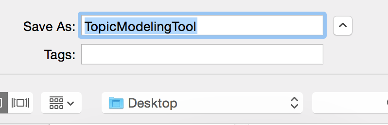
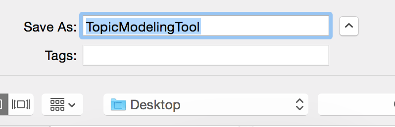
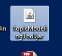
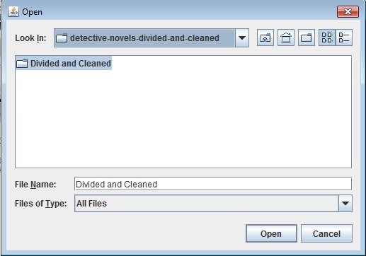
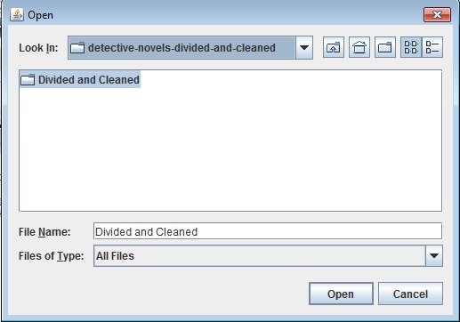
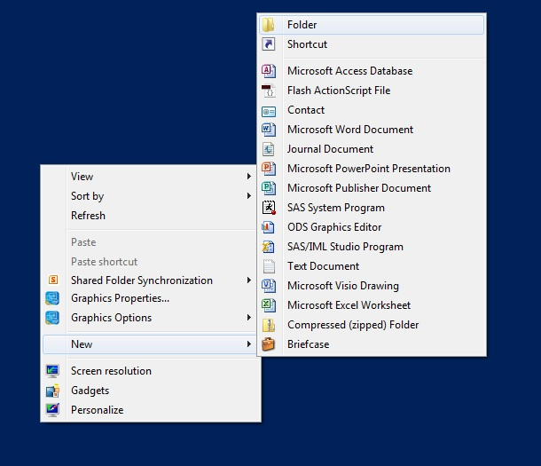
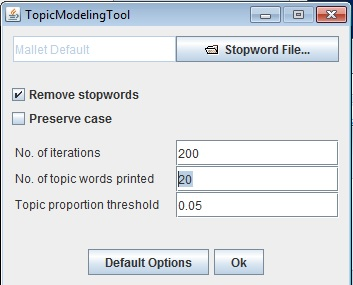
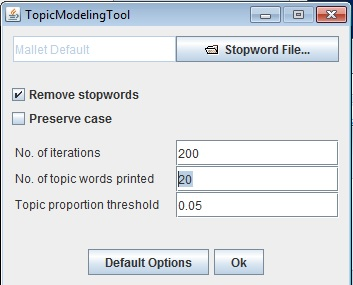

- The Topic Modeling Tool is a graphical interface to MALLET, one of the most widely-used packages for topic modeling.
- The Topic Modeling Tool is a graphical interface to MALLET, one of the most widely-used packages for topic modeling.
- Save it to your desktop.
 ..or.. 
..or.. 
- Double-click on the app. It should run automatically:

- Click on the "Select Input File or Dir" button:

- Select the "detective-novels-divided-and-cleaned" folder. Then select the "Divided and Cleaned" subfolder:
 

- Create a new folder to hold the output:

- Adjust the number of topics and the number of keywords to display:
 

- Watch it learn!

Examining the Output
- Browse the generated HTML files.
- Open the
TMResults folder.
- Open the
output_html folder.
- Open
all_topics.html.
Beth Seltzer and Scott Enderle